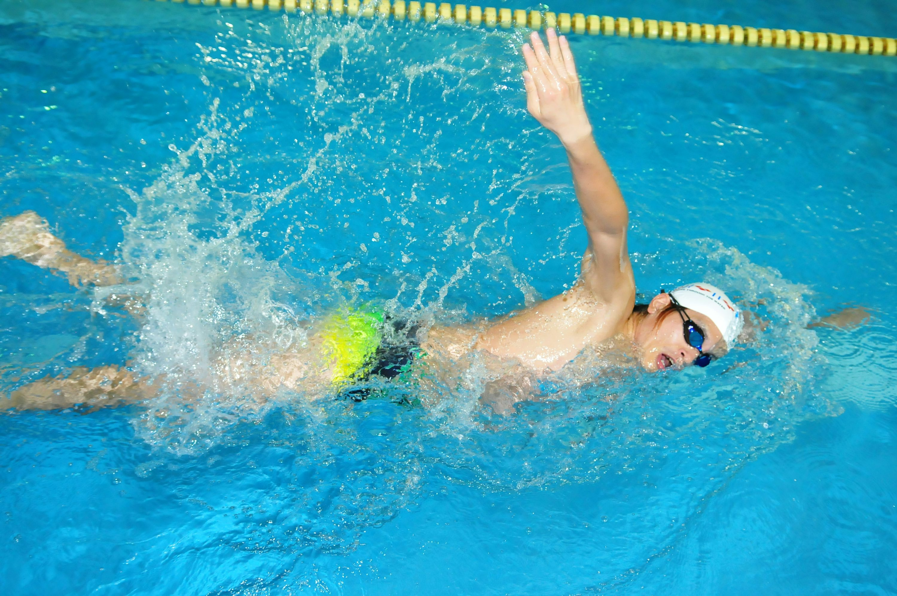
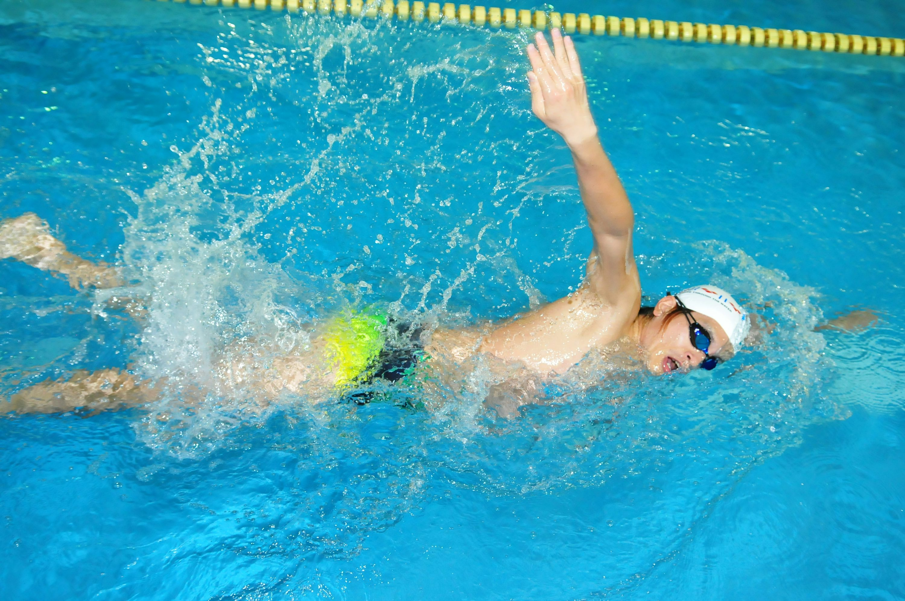
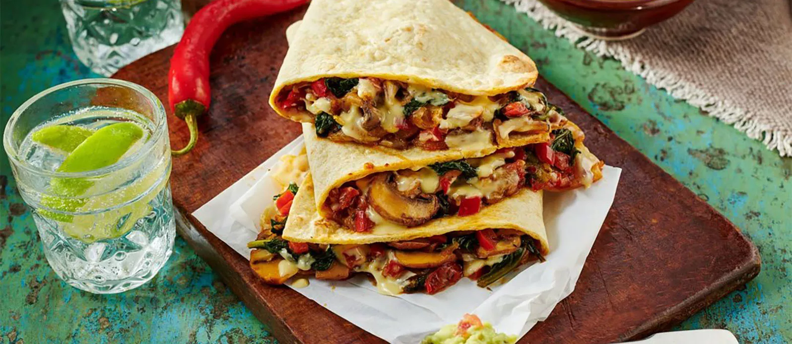
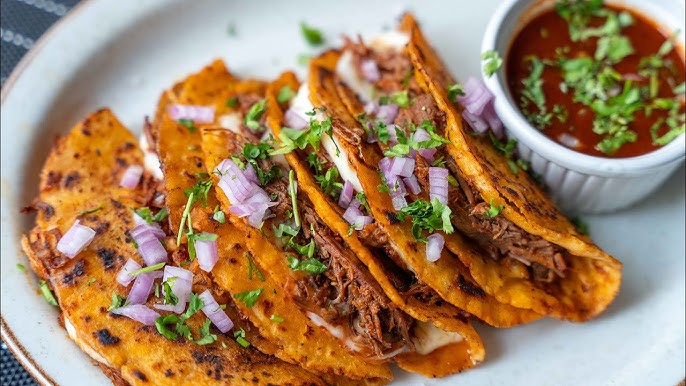
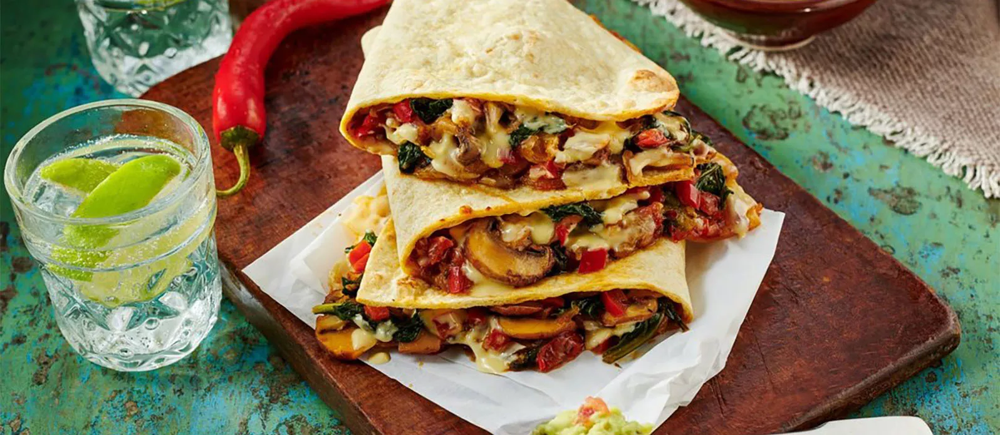
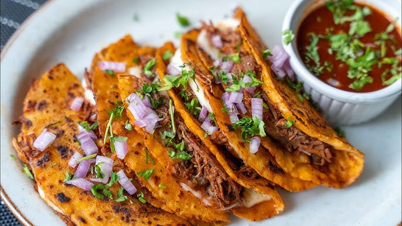

DESCRIPCIÓN PERSONAL
Me llamo Jose Daniel Avila Giron, tengo 10 años, vivo en mi casa al lado de mi vecino en Manantial. Me gusta jugar pelota, agarro rápido confianza. Mi animal favorito es el chucho. Me gusta estar en mi casa y en la escuela para estudiar y aprender. Soy abanderado, estudioso y responsable. Mi familia está compuesta por mi mamá, papá, abuelos, hermano, dos chuchos, primos y tías. Mi comida favorita es la pizza. Estoy en primero C. Mis amigos especiales son Jefferson, Justin y Fredy.
INFORMACIÓN PERSONAL
Correo electrónico: hcarlitos429@gmail.com
Facebook: Giron thr
Instagram: josedanielavilagiron
TikTok: JD AVILA
HOBBIES
Mis hobbies
 


MIS FOBIAS
INFORMACIÓN ACADÉMICA
- 2025 - Segundo Básico Juan José Telles
- 2024 - Primero Básico Juan José Telles
- 2023 - Sexto Primaria Sector El Callejón
- 2022 - Quinto Primaria Sector El Callejón
- 2021 - Cuarto Primaria Sector El Callejón
- 2020 - Tercero Primaria Sector El Callejón
- 2019 - Segundo Primaria Sector El Callejón
- 2018 - Primero Primaria Sector El Callejón
OTROS DATOS
- Equipo: Barcelona
- Artista: Tito Doble P
- Jugador: Lamine Yamal
- Época: Invierno
- Animal: Perro
- Color: Negro y blanco
- País: Brasil
COMIDA FAVORITA
 


